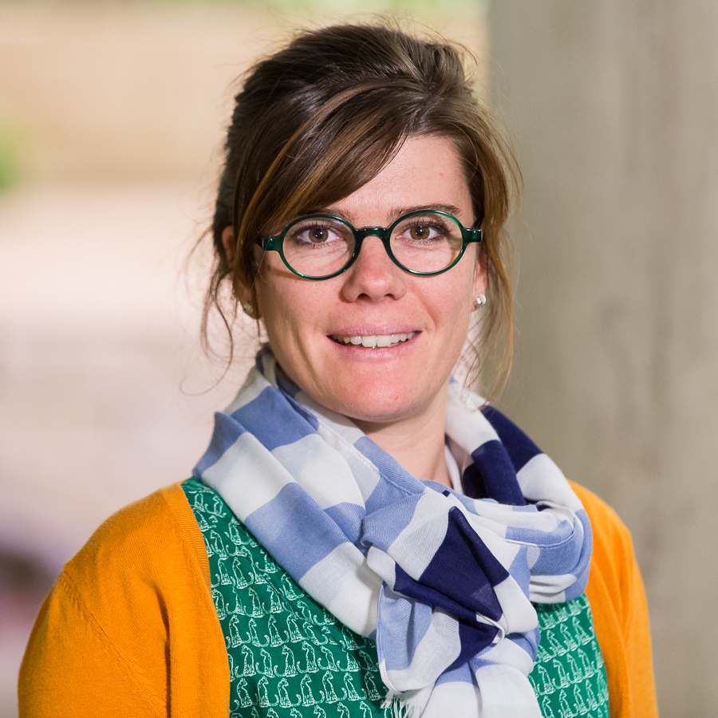

Julie Bessac
Computational Statistician
National Laboratory of the Rockies, Golden, CO, USA
Computational Science Center - Data, Analysis and Visualization Group
julie.bessac at nlr.gov
Adjunct Professor
Virginia Tech, Blacksburg, VA, USA
Department of Statistics
Academy of Data Science
jbessac at vt.edu

Research
Google Scholar Profile
Research interests:
Statistical modeling and learning (spatiotemporal, multivariate, complex systems), Uncertainty quantification, Statistical validation methods, State-space models, Clustering, Deep learning, Statistics for AI/ML
Background
- 2023--... Computational Statistician at the Computational Science Center at National Laboratory of the Rockies, Golden, CO, USA.
- 2017--2023 Computational Statistician at the Mathematics and Computer Science division at Argonne National Laboratory, Lemont, IL, USA.
- 2014--2017 Post-doctoral appointment at the Mathematics and Computer Science division at Argonne National Laboratory, Lemont, IL, USA, under the supervision of Mihai Anitescu and Emil Constantinescu
- 2010--2011 Master in Probability and Statistics, University of Rennes 1 and Ecole Normale Superieure de Cachan, Antenne de Bretagne, Rennes, France.
- 2009--2010 Agregation de Mathematiques, University of Rennes 1 and Ecole Normale Superieure de Cachan, Antenne de Bretagne, Rennes, France.
- 2005--2009 Graduate (Bachelor and Master) in Mathematics, Magistere de Mathematiques , University of Rennes and Ecole Normale Superieure de Cachan, Antenne de Bretagne, Rennes, France.
Teaching
Spring 2026: Virginia Tech
- Statistical Learning (ADS-STAT 5525) - Scroll to the bottom for all lecture notes
Fall 2025, Fall 2023: Virginia Tech
- Applied Time Series (STAT 4534-5664)
Sept. 2018: The University of Chicago
- Bootcamp "Introduction to the Statistics of Spatial Data"
2012-2014: National School of Statistics and Analysis of Information (ENSAI), Rennes
- Tutoring on: statistical tests ; measure theory and probability ; Markov chains
2011-2012: Faculty of Economics, Universite de Rennes 1, Rennes
- Tutoring on: data analysis ; inferential statistics ; Microsoft Office softwares
Lecture Notes for Statistical Learning (ADS-STAT 5525)